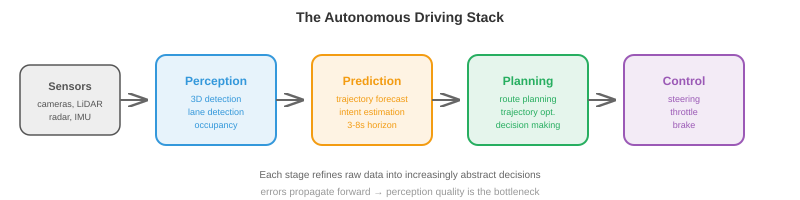
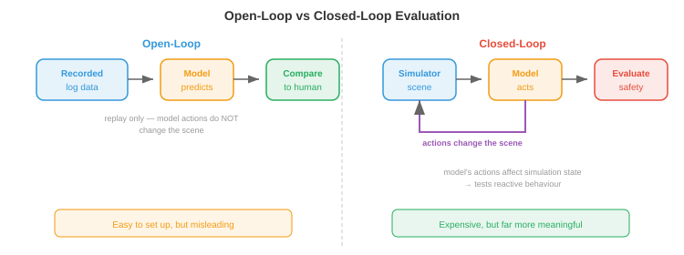

自动驾驶汽车¶
一句话总结：自动驾驶把感知、预测、规划、控制装进一辆车，是当今商业化最深的自主系统；本节梳理其整栈架构、高精地图、运动预测、规划、端到端驾驶、仿真、安全标准与自动化等级。
自动驾驶汽车是商业化最成熟的自主系统，把感知、预测、规划与控制整合进一辆车。本节覆盖自动驾驶技术栈、高精地图、运动预测、规划、端到端驾驶、仿真、安全标准以及自动化等级。
-
自动驾驶大概是目前在规模化尝试的机器人问题里最难的。工厂机器人在受控环境里干活，而自动驾驶车必须应付一个开放世界：难以预测的人类司机、乱穿马路的行人、一夜之间冒出来的施工区，以及每分钟都在变的天气。
-
赌注也是独一无二地高。自动驾驶车在高速公路速度下行驶，身边全是脆弱的道路使用者。对于安全关键的失败，容错几乎为零。
自动驾驶技术栈¶
- 经典的自动驾驶架构是一条模块化流水线，分四个阶段，前一个的输出喂给下一个:

-
感知 (perception，本章第 1 节已讲) 把原始传感器数据处理成结构化的场景表示：带 3D 位置、速度和类别标签的检测目标；车道线；交通灯；可行驶路面边界。
-
预测 (prediction) 预估其他智能体 (车辆、行人、骑行者) 未来怎么走。给定当前场景状态，预测模块输出每个智能体在一段时间视界 (通常未来 3-8 秒) 内的轨迹。
-
规划 (planning) 决定自车该做什么：走哪条路径、什么时候变道、什么时候让行、什么时候加速或刹车。它接收预测出来的场景，产出一条自车轨迹，要求安全、舒适，并朝目的地推进。
-
控制 (control) 把规划好的轨迹转成执行器命令：转向角、油门和刹车。这是最底层，把抽象轨迹落地成物理运动。
-
模块化设计的工程优势很清楚：每个模块可以独立开发、测试和迭代。但它也有软肋：错误会向下游传递 (一次漏检对规划器来说完全不可见)，且每个接口都会丢信息 (规划器只看到边界框，看不到产生这些框的丰富传感器数据)。
高精地图¶
-
高精 (High-Definition, HD) 地图是厘米级精度的详细数字地图，编码了道路结构：车道边界、车道连通性 (在路口哪条车道接哪条)、交通标志位置、限速、人行横道位置、路面高程。
-
高精地图给驾驶任务提供了强先验。感知模块不用每一帧都从零发现车道边界；它只需要把车辆定位到地图里，再校验现实与存储的结构是否匹配。这大大简化了规划。
-
制作高精地图需要专门的测绘车辆，配备高端 LiDAR、相机和 RTK-GPS。地图必须随着道路变化不断维护更新。这既昂贵，也不容易扩展到地球上所有道路。
-
无图驾驶 (mapless driving，亦称"在线建图") 目标是消除对预建高精地图的依赖。车辆从自身传感器出发，实时构建局部地图。MapTR 和 MapTRv2 这类模型用 Transformer 架构直接从相机图像预测矢量化地图元素 (车道中心线、道路边界、人行横道)，以有序点序列的形式输出折线。
-
无图路线拿地图精度换扩展性：车能开的路，它就能建。但这要求感知系统足够鲁棒，能实时检测出所有相关的道路结构，包括复杂路口、高速匝道和施工区。
-
实践中不少系统采用混合方案：用一份粗略拓扑的轻量地图 (来自现有地图服务商)，再由车载传感器实时增强。
运动预测¶
-
预测其他道路使用者要去哪里，是自动驾驶最难的子问题之一。人类难以预测，意图是隐藏的，未来可能性的空间迅速分叉。
-
预测模型的输入是场景上下文 (scene context)：所有检测到的智能体在近期一段过去 (通常是 1-2 秒历史) 的位置和速度，加上静态上下文 (车道几何、交通信号、道路边界)。
-
输出是每个智能体的一组预测轨迹 (predicted trajectories)，通常覆盖未来 3-8 秒。既然未来不确定，好的预测模型输出的是多条候选轨迹加上对应概率，而不是单点估计。
-
轨迹预报 (trajectory forecasting) 当成回归问题：预测每个智能体在未来离散时间步的 \((x, y)\) 坐标。损失通常取在 \(K\) 条预测轨迹上的最小平均位移误差 (minimum Average Displacement Error, minADE):
-
这是一个"\(K\) 选一取最好"的指标：只要模型给出的 \(K\) 条预测里任意一条接近真值，就算它对。这鼓励模型给出多样的、多模态的预测。
-
社会力模型 (social forces) 把行人行为建模成一个动力系统，每个人受到吸引力 (指向目标) 和排斥力 (远离其他行人和障碍物)。第 \(i\) 个人的加速度为:
-
这是一组微分方程，类似本章第 2 节的机器人动力学方程。模型很优雅，但依赖手工调的力参数，且难以处理复杂的多智能体交互。
-
用图神经网络 (Graph Neural Network, GNN) 做预测：把场景建模成一张图，每个智能体是一个节点，边表示空间关系 (邻近、共享车道)。节点之间的消息传递捕捉交互，比如"这辆车正在给那个行人让行"，或"这两辆车正要并入同一车道"。
-
现代预测架构 (例如 MTR、QCNet) 用基于 Transformer 的模型，联合推理智能体历史、地图上下文以及智能体之间的交互。智能体通过交叉注意力去关注相关的地图特征 (自己当前的车道、即将到来的路口) 和其他智能体 (前面的车、人行横道上的行人)。输出是一组轨迹假设，通过自回归或混合模型生成。
-
目标条件预测 (goal-conditioned prediction) 先预测智能体可能去哪儿 (一组候选目标点，如车道端点或路口出口)，再预测通往每个目标的轨迹。这把问题分解为"去哪" (离散、可管理) 和"怎么去" (给定目标下的连续路径)，让多模态预测问题更好处理。
规划¶
-
给定预测出来的场景，规划器要为自车产出一条轨迹。这是一个约束优化问题：找一条安全、舒适、高效、合法的轨迹。
-
基于规则的规划器 (rule-based planner) 把驾驶行为编码为一组 if-then 规则："如果人行横道上有行人，让行"、"如果距离前车不到 2 秒车距，不变道"、"如果接近红灯，减速在停车线前停住"。这些规则可解释、可审计，但一旦场景复杂就变得笨重 (成千上万条规则、大量边缘情况、规则之间还会相互影响)。
-
基于优化的规划器 (optimisation-based planner) 把驾驶表述成轨迹优化。自车轨迹被参数化 (例如未来若干时间步的 \((x, y, \theta, v)\) 状态序列)，然后最小化一个目标函数:
-
进度项惩罚偏离预定路线的行为。舒适项惩罚过大的横向加速度、加加速度 (jerk，加速度的导数) 和急打方向，因为乘客对这些最敏感。安全项惩罚与其他智能体过近，借助预测轨迹来评估碰撞风险。
-
这是约束优化 (第 3 章)：在不等式约束下最小化代价函数。权重 \(w_1, w_2, w_3\) 在互相竞争的目标之间权衡 (激进驾驶更快，但更不舒适、更不安全)。
-
基于学习的规划器 (learning-based planner) 用人类驾驶数据训练神经网络来生成轨迹。模型观察场景并直接输出规划轨迹，从大量人类驾驶示例中隐式地学到复杂的取舍。
-
好处是，人类驾驶行为被整体地捕捉到，包括那些微妙、难以形式化的部分：汇入时要多果断、路口稍微顶一顶、给骑行者留多少空间。坏处和第 2 节讲的模仿学习一样，存在分布偏移问题：模型在训练数据没充分覆盖的情境下，可能表现得不可预测。
端到端驾驶¶
-
端到端驾驶 (end-to-end driving) 干脆把模块边界全部去掉。一个神经网络吃原始传感器输入 (相机图像、LiDAR 点云)，直接输出驾驶命令 (转向、油门、刹车) 或规划好的轨迹，不再有独立的感知、预测、规划模块。
-
吸引力在于，整个系统按最终任务 (安全驾驶) 联合优化，模块边界不会丢信息。感知模块学到的正是规划器需要的特征，而不是那些可能与任务相关性不大的通用检测结果。
-
UniAD (Unified Autonomous Driving) 是一个里程碑式的端到端架构。它先把多相机图像过一个 BEV 编码器，再级联一串基于 Transformer 的模块：跟踪、在线建图、运动预测、占用预测、规划。虽然内部仍有模块，但它们都可微、端到端联合训练，规划损失可以反向传播穿过整个网络。
-
UniAD 的规划模块通过关注预测出来的 BEV 特征、预测出的其他智能体轨迹和预测占用，来生成未来自车的路径点。这就是第 3 章的多元链式法则在起作用：梯度从规划损失一路回流到图像编码器，告诉感知特征要怎么才对规划更有用。
-
更新的端到端方法用 VLA 风格架构 (本章第 3 节)。DriveVLM 这类模型吃相机图像和一条导航指令 (或路线)，用 VLM 主干产出驾驶动作。这把大规模预训练带来的好处 (视觉理解、推理) 直接搬进了驾驶技术栈。
-
端到端驾驶的核心张力在于可解释性 (interpretability)。模块化系统可以报告"我在 (x, y) 检测到一个行人，预测他会横穿"——失败模式是可诊断的。端到端系统是个产出一个转向角的黑箱，出问题时诊断为什么失败很难，这对安全认证是个严重的顾虑。
面向驾驶的世界模型¶
-
世界模型 (world model) 学的是给定当前状态和自车动作后，驾驶场景的未来状态：\(p(s_{t+1} \mid s_t, a_t)\) (在第 10 章介绍过)。在驾驶里，这意味着生成真实感的未来帧或 BEV 布局："如果我加速并向左打方向，3 秒后场景会是这样"。
-
世界模型给自动驾驶带来两种强能力:
-
基于想象的规划 (imagination-based planning)：规划器不必先执行再看结果，而是把多条候选轨迹在世界模型里"想象"出来，分别评估安全性和舒适性，挑最好的。这就是模型基于的强化学习 (第 2 节介绍过) 用到驾驶上。
-
学习式仿真 (learned simulation)：用真实驾驶数据训练出的世界模型，本质就是一个数据驱动的仿真器。它生成真实感强的场景 (包括罕见的边缘情况)，无需手工搭建仿真器。关键是，它捕捉了真实驾驶的统计规律：其他司机实际怎么开、光照如何变化、雨怎么影响能见度。
-
-
GAIA-1 (Wayve) 是一个用于驾驶的生成式世界模型。给一段过去的相机帧和自车动作，它自回归地生成未来视频帧。它用的是以动作作为条件的视频扩散架构。模型学到了如何生成合理的未来：遵守交通规则的车辆、走人行道的行人、正确切换状态的交通灯，全部由训练数据中涌现出来，而不是靠人工编写规则。
-
DriveDreamer 和 GenAD 走的路数类似，但在 BEV 空间而不是像素空间里操作。预测未来的 BEV 布局比生成完整视频帧要紧凑得多 (类似机器人里的 DreamerV3 在潜空间而不是像素空间预测，第 2 节讨论过)。BEV 世界模型预测所有智能体会在哪里、道路结构长什么样、自由空间在哪儿，规划器直接使用这些信息。
-
神经闭环仿真 (neural closed-loop simulation) 用世界模型替代人工搭建的仿真器来做测试。以一条真实驾驶日志为起点，世界模型生成"如果自车采取了不同动作会发生什么"。这让反事实评估成为可能："如果我晚 0.5 秒才刹，会怎样?"——不需要在物理世界里重现场景。
-
这里与 JEPA 框架 (第 10 章) 的联系很自然。驾驶世界模型不需要预测像素级完美的未来 (每个像素的确切 RGB 值)，只需要预测对规划重要的方面：智能体在哪、多快、自由空间在哪。JEPA 风格的嵌入空间预测正好捕捉这些语义上有意义的属性，不必把算力浪费在无关的视觉细节上，比如云朵纹理。
-
主要挑战是长时视界保真度 (long-horizon fidelity)。世界模型随时间积累误差：第 2 帧的一个小错会把后续所有帧都带偏。对驾驶而言，3 秒预测视界对战术决策很有用 (现在该并线吗?)，但 30 秒视界 (战略决策所需，比如路径规划) 至今仍不可靠。当前工作用重新锚定 (定期用真实观测重置模型) 和不确定性估计 (在预测变得不可信时给出警示) 来缓解这个问题。
仿真¶
-
靠在真实道路上开车来测自动驾驶系统，是必要的，但不够。危险场景 (险些相撞、边缘情况) 很稀有，靠里程数来测试效率极低。要在统计上证明安全，需要开出几亿英里，这不可行。
-
仿真 (simulation) 提供了无限、可控、安全的测试。真实世界罕见的场景 (一个小孩跑上马路、爆胎、突然出现的障碍物)，可以在仿真里跑上百万次。
-
CARLA 是一个基于虚幻引擎 (Unreal Engine) 的开源驾驶仿真器。它提供真实感的城市环境、动态天气、交通智能体和传感器仿真 (相机、LiDAR、雷达)。研究者用 CARLA 训练基于强化学习 (Reinforcement Learning, RL) 的驾驶智能体，并评估感知算法。
-
nuPlan (Motional) 是一个闭环规划基准。与开环评估 (回放日志数据，拿规划器的输出跟人类司机的实际轨迹比) 不同，闭环评估允许规划器的决策影响仿真：如果规划器决定变道，仿真就据此演化下去。这测试的是反应性行为，而不只是轨迹相似度。

-
开环 (open-loop) 与闭环 (closed-loop) 评估的区别至关重要:
-
开环：回放一段记录好的场景，计算模型输出与人类司机动作的相似度。设置容易，但会误导人：一个永远预测"直行"的模型在高速上误差可能很低，但一到拐弯就会撞车。
-
闭环：模型的动作会改变仿真状态，仿真据此演化。这测试模型从自己错误中恢复、对动态情况作出反应的能力。它昂贵得多，却有意义得多。
-
-
场景生成 (scenario generation) 造出能给系统施压的测试用例。对抗场景 (前车突然刹车、行人躲在停放车辆后面) 通过对使自动驾驶系统表现最差的情况做优化生成。这与机器学习里的对抗训练 (第 6 章) 有关：找出让损失最大化的输入。
安全¶
-
自动驾驶的安全由工程标准治理，不只是机器学习指标。
-
ISO 26262 (功能安全，Functional Safety) 是安全关键电子系统的汽车行业标准。它定义了汽车安全完整性等级 (Automotive Safety Integrity Level, ASIL)，从 A (最低) 到 D (最高)，依据潜在危害的严重性、暴露程度和可控性来划分。自动驾驶系统的感知与规划组件通常是 ASIL-D，也就是最高等级，需要全面的验证、冗余和失效安全设计。
-
SOTIF (预期功能安全，Safety of the Intended Functionality, ISO 21448) 处理另一类危害：不是硬件失效 (那是 ISO 26262 的地盘)，而是系统按设计工作了，却仍然给出不安全的结果。比如一个感知模型把白色卡车误识为天空 (真实发生过) 就是 SOTIF 问题：硬件没毛病，但算法的局限造成了危险。
-
运行设计域 (Operational Design Domain, ODD) 定义了自动驾驶系统被设计运行的条件：具体地理区域、道路类型 (仅高速、城区、还是两者)、天气状况 (禁止大雪)、速度范围、时段等。运行在 ODD 之外是不被允许的：如果系统应付不了雪，就不能在雪天上路。
-
失效安全 (fail-safe) 与失效可运行 (fail-operational) 设计:
- 失效安全：检测到故障时，系统转入安全状态 (如靠边停车)。这是最低要求。
- 失效可运行：靠冗余组件，即使发生故障系统仍能继续安全运行。一辆有冗余转向、刹车和算力的自动驾驶车，可以在单点组件失效后仍开到一个安全位置。
-
冗余 (redundancy) 是根本原则。关键感知传感器被复制部署：多个相机视场重叠，LiDAR 与雷达同时提供独立的深度测量，双算力平台运行同一份软件。任一单点失效时，其他组件仍提供足够信息来安全驾驶。
自动化等级¶

-
SAE J3016 标准定义了六个驾驶自动化等级，从 0 (无自动化) 到 5 (完全自动化):
-
L0 (无自动化，No Automation)：人做所有事。系统可能给警告 (车道偏离警告)，但不控车。
-
L1 (驾驶员辅助，Driver Assistance)：系统控制转向或速度中的一项，不能两项都控。自适应巡航 (维持速度和跟车距) 或车道保持辅助 (车居中在车道) 就是 L1。
-
L2 (部分自动化，Partial Automation)：系统同时控制转向和速度，但人类必须全程监控，随时准备接管。特斯拉 Autopilot、通用 Super Cruise 以及当下大多数"自动驾驶"功能都是 L2。人仍是负责的司机。
-
L3 (有条件自动化，Conditional Automation)：系统负责驾驶并监控环境，但仅在特定条件下 (ODD 内)。人类可以脱手，但当系统请求接管时必须准备好接手 (有一个时间缓冲，通常 10 秒以上)。全球首个获得型式认证的 L3 系统是本田 Legend Hybrid EX (据本田新闻稿 2021 年 3 月 4 日在日本上市)；欧洲首个获得 UN-R157 认证的 L3 系统是奔驰 Drive Pilot (据奔驰 2021 年 12 月公告，在特定高速、60 km/h 以下运行)。
-
L4 (高度自动化，High Automation)：系统在其 ODD 内驾驶并处理一切情况，无需人类介入。遇到 ODD 之外的情况，它能安全停下。Waymo 的 Robotaxi 服务在特定地理区域按 L4 运行。
-
L5 (完全自动化，Full Automation)：系统在人类能开的一切地方、一切条件下都能开。不需要方向盘和踏板。目前尚不存在。
-
-
关键区别在于谁对安全负责。L0-L2 由人类负责，L3-L5 由系统负责 (在 ODD 内)。这在法律、保险与伦理上都有深远影响。
-
当前行业状态是 L2 广泛部署、L3 开始部署、L4 有限地理部署的混合。L5 仍是长期研究目标。
编码练习 (使用 CoLab 或 notebook)¶
-
实现一个简单的轨迹优化规划器。给定起点、目标和一个障碍物，用梯度下降找到最平滑的无碰撞路径。
import jax import jax.numpy as jnp import matplotlib.pyplot as plt # 轨迹: N 个路径点, 每个是 (x, y) N = 20 start = jnp.array([0.0, 0.0]) goal = jnp.array([10.0, 0.0]) obstacle = jnp.array([5.0, 0.0]) obs_radius = 1.5 # 初始化: 起点到目标的直线 waypoints_init = jnp.linspace(start, goal, N) def cost(waypoints): wp = jnp.concatenate([start[None], waypoints, goal[None]], axis=0) # 平滑性: 惩罚加速度 (二阶差分) accel = wp[2:] - 2 * wp[1:-1] + wp[:-2] smooth_cost = jnp.sum(accel ** 2) # 避障: 惩罚靠近障碍物 dists = jnp.linalg.norm(wp - obstacle, axis=1) collision_cost = jnp.sum(jnp.maximum(0, obs_radius + 0.5 - dists) ** 2) return 10 * smooth_cost + 100 * collision_cost grad_cost = jax.grad(cost) # 只优化内部路径点 waypoints = waypoints_init[1:-1] lr = 0.01 for _ in range(500): g = grad_cost(waypoints) waypoints = waypoints - lr * g # 绘图 full_path = jnp.concatenate([start[None], waypoints, goal[None]], axis=0) theta = jnp.linspace(0, 2 * jnp.pi, 100) plt.figure(figsize=(10, 4)) plt.plot(full_path[:, 0], full_path[:, 1], "b.-", label="Optimised path") plt.plot(waypoints_init[:, 0], waypoints_init[:, 1], "r--", alpha=0.5, label="Initial (straight)") plt.fill(obstacle[0] + obs_radius * jnp.cos(theta), obstacle[1] + obs_radius * jnp.sin(theta), alpha=0.3, color="red", label="Obstacle") plt.plot(*start, "go", markersize=10); plt.plot(*goal, "g*", markersize=15) plt.legend(); plt.axis("equal"); plt.grid(True) plt.title("Trajectory Optimisation: Smooth Collision-Free Path") plt.show() -
模拟一个匀速运动预测模型，并对一辆转弯车辆与真值做对比。
import jax.numpy as jnp import matplotlib.pyplot as plt # 真值: 车辆右转 dt = 0.1 T = 40 # 4 秒 v = 10.0 # m/s omega = 0.3 # rad/s (转弯角速度) # 真实轨迹 (匀速转弯率) t = jnp.arange(T) * dt theta = omega * t gt_x = (v / omega) * jnp.sin(theta) gt_y = (v / omega) * (1 - jnp.cos(theta)) # 从 t=0 的匀速预测 # 假设车按当前航向继续直行 obs_steps = 10 # 观察前 1 秒 vx0 = v * jnp.cos(theta[obs_steps - 1]) vy0 = v * jnp.sin(theta[obs_steps - 1]) pred_t = jnp.arange(T - obs_steps) * dt pred_x = gt_x[obs_steps - 1] + vx0 * pred_t pred_y = gt_y[obs_steps - 1] + vy0 * pred_t plt.figure(figsize=(8, 6)) plt.plot(gt_x[:obs_steps], gt_y[:obs_steps], "ko-", label="Observed") plt.plot(gt_x[obs_steps:], gt_y[obs_steps:], "g-", linewidth=2, label="True future") plt.plot(pred_x, pred_y, "r--", linewidth=2, label="Constant velocity prediction") plt.legend(); plt.axis("equal"); plt.grid(True) plt.xlabel("x (m)"); plt.ylabel("y (m)") plt.title("Constant Velocity Prediction vs Turning Vehicle") plt.show() -
实现一个简单的基于规则的规划器，根据检测到的障碍物在保持车道和停车之间做决策。
import jax.numpy as jnp def rule_based_planner(ego_speed, obstacles, speed_limit=13.9): """ 简单的基于规则的规划器. ego_speed: 当前速度 (m/s) obstacles: 前方车辆的 (距离, 速度) 元组列表 speed_limit: 最大允许速度 (m/s), 默认约 50 km/h 返回: (target_speed, action_label) """ min_following_distance = 2.0 * ego_speed # 2 秒车距规则 emergency_distance = 5.0 # 米 if not obstacles: return speed_limit, "cruise" # 找出最近的前方障碍物 closest_dist, closest_speed = min(obstacles, key=lambda o: o[0]) if closest_dist < emergency_distance: return 0.0, "EMERGENCY STOP" elif closest_dist < min_following_distance: # 匹配前车速度 target = min(closest_speed, speed_limit) return target, "following" else: return speed_limit, "cruise" # 测试场景 scenarios = [ (13.9, [], "Empty road"), (13.9, [(30.0, 10.0)], "Slower car ahead"), (13.9, [(3.0, 0.0)], "Stopped car very close"), (13.9, [(50.0, 13.9)], "Car ahead at same speed"), ] for speed, obs, desc in scenarios: target, action = rule_based_planner(speed, obs) print(f"{desc:30s} → {action:15s} target_speed={target:.1f} m/s ({target*3.6:.0f} km/h)")
📌 本节要点¶
- 模块化技术栈：感知 → 预测 → 规划 → 控制，各模块独立开发但接口处会丢信息、误差会向下游传播。
- 高精地图 vs 无图驾驶：高精地图给强先验但难维护，MapTR 等在线建图用 Transformer 实时输出矢量化车道与边界。
- 多模态预测：未来分叉严重，优秀预测器输出 \(K\) 条候选轨迹并用 minADE 评估；MTR / QCNet 用 Transformer 联合建模交互。
- 规划三路线：规则式可审计但易膨胀，优化式在安全/舒适/进度间权衡，学习式抓住人类微妙决策却有分布偏移风险。
- 端到端驾驶: UniAD、DriveVLM 让规划损失一路回传到相机，联合最优但可解释性差，安全认证难。
- 驾驶世界模型: GAIA-1、DriveDreamer 支持想象式规划与学习式仿真，JEPA 风格嵌入预测可避开像素细节。
- 仿真的闭环性：开环只看轨迹相似度会误导；闭环让动作改变仿真状态，才测得出反应式行为与错误恢复。
- 安全标准三件套: ISO 26262 (硬件功能安全，ASIL-D)、SOTIF (算法局限带来的危害)、ODD (系统被允许运行的条件边界)。
- 冗余与失效可运行：传感器、算力、执行器都要冗余，单点故障后仍能安全停车或继续行驶。
- SAE 六等级: L2 需人类监控，L3 起系统在 ODD 内负责安全，L4 已在特定城区落地，L5 仍是长期目标。